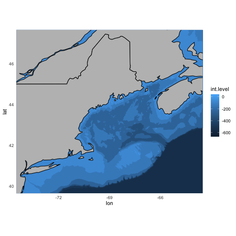
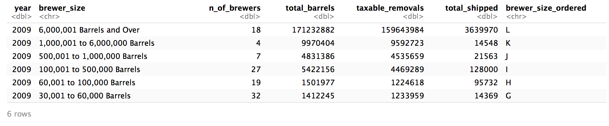

Recent Blog Posts
Mapping with ggplot -- Published on 21 May 2020 --
Polygons and shapefiles can be plotted using the ggplot2 package to create maps. To get started there are a few packages to load... read more
How to change the labels for a ggplot legend -- Published on 21 May 2020 --

The scale_colour_discrete() function can be used alongside ggplot to provide new names in the legend. To demonstrate, load a TidyTuesday dataset from 3/31/20... read more
How to use case_when to fill a new data column based on data from another column -- Published on 21 May 2020 --
I used the tidyverse package and its case_when() function to create a new column filled with data based on the information in an existing data column. To demonstrate, load a TidyTuesday dataset from 3/31/20... read more